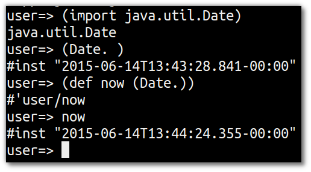

More Java fun
Lets try some more examples to show how easy it is to use Java methods and objects. Remember that everything in java.lang is available in your Clojure project by default
Returning specific types
Clojure has types, after all it runs on the JVM and included java.lang library in ever project. Types are infered at runtime, saving you the need to design types yourself.
Sometimes you want to ensure a value is of a particular type and you can use Java to do this.
Return a string value as an integer
(. Integer "123)
;; Or the more common short-hand form
(Integer. "123")
This is the equivalent to the Java code:
Integer myInt = new Integer("123");
The . function essentially instantiates a new object from the class, in this case Integer, passing any arguments to its constructor.
Example: converting the port number read from an environment variable as a string which needs to be passed to the Jetty server as a number. See the Clojure Webapp workshop an example.
More on types in the section a quick look at types
fixme The following is work in progress
Using Java date
Use
java.util.Dateto explore date and time
(import java.util.Date)
(Date.)
(def now (Date.))
(str now)

Its easy to create a local reference to a Java Date object instance and then call methods on that date object
(let [date (java.util.Date.)] (.getHours date))
Or using the threading macro, we can make the code a little clearer
(->
(java.util.Date.)
(.getHours))
Its Joda Time
clj-time is a Clojure wrapper for Joda time. As this is an external library, you need to add it to your project.clj file as a dependency. To find the latest version, check the clj-time library on Clojars.org
Add the clj-time dependency to your project (restart needed), require the clj-time library in your code and use the functions
now,formatters&unparse
(require '[clj-time.core :as time])
(require '[clj-time.format :as time-format])
(time/now)
;; ISO 8601 UTC format
(def time-formatter (time-format/formatters :basic-date-time))
(time-format/unparse custom-formatter (date-time 2010 10 3))
Swing coding
Swing GUI coding in Java feels quite messy to me, however using Swing in Clojure feels much cleaner. Using the doto function allow you to chain function (Java method) calls together.
Start with the
importfunction to add the neccessary swing libraries. Then create a button and add it to a panel, adding that panel to a frame.
(import '(javax.swing JFrame JPanel JButton))
(def button (JButton. "Click Me!"))
(def panel (doto (JPanel.)
(.add button)))
(def frame (doto (JFrame. "Hello Frame")
(.setSize 200 200)
(.setContentPane panel)
(.setVisible true)))
Let’s make our button show a message using an JOptionPane/showMessageDialog widget
(import 'javax.swing.JOptionPane)
(defn say-hello []
(JOptionPane/showMessageDialog
nil "Hello, World!" "Greeting"
JOptionPane/INFORMATION_MESSAGE))
To connect this function to our button, write a class implementing the ActionListener interface. Clojure’s proxy feature is the easiest way to do this:
(import 'java.awt.event.ActionListener)
(def act (proxy [ActionListener] []
(actionPerformed [event] (say-hello))))
act is an instance of an anonymous class implementing the actionPerformed method, so attach this class as a listener the button
(.addActionListener button act)
Now evaluate the say-hello function to see the new button in action.
(say-hello)
Seesaw is a really nice library for swing development. Also talk a look at the Seesaw minesweeper series.
Understanding the dot special form
This section onwards needs reworking
All of these examples (except java.lang.Math/PI) use macros which expand to use the dot special form. In general, you won't need to use the dot special form unless you want to write your own macros to interact with Java objects and classes. Nevertheless, here is each example followed by its macroexpansion:
(macroexpand-1 '(.toUpperCase "By Bluebeard's bananas!"))
; => (. "By Bluebeard's bananas!" toUpperCase)
(macroexpand-1 '(.indexOf "Let's synergize our bleeding edges" "y"))
; => (. "Let's synergize our bleeding edges" indexOf "y")
(macroexpand-1 '(Math/abs -3))
; => (. Math abs -3)
You can think of the general form of the dot operator as:
(. object-expr-or-classname-symbol method-or-member-symbol optional-args*)
There are a few more details to the dot operator than that, and if you're interested in exploring it further you can look at clojure.org's documentation on Java interop.
Input/output involves resources, be they files, sockets, buffers, or whatever. Java has separate classes for reading a resource's contents, writings its contents, and for interacting with the resource's properties.
For example, the java.io.File class is used to interact with a file's properties. Among other things, you can use it to check whether a file exists, to get the file's read/write/execute permissions, and to get its filesystem path:
(let [file (java.io.File. "/")]
(println (.exists file))
(println (.canWrite file))
(println (.getPath file)))
; => true
; => false
; => /
Noticeably missing from this list of capabilities are reading and writing. To read a file, you could use the java.io.BufferedReader class or perhaps java.io.FileReader. Likewise, you can use the java.io.BufferedWriter or java.io.FileWriter class for writing. There are other classes available for reading and writing as well, and which one you choose depends on your specific needs. Reader and Writer classes all have the same base set of methods for their interfaces; readers implement read, close, and more, while writers implement append, write, close, and flush. So, Java gives you a variety of tools for performing IO. A cynical person might say that Java gives you enough rope to hang yourself, and if you find such a person I hope you give them just enough arms to hug them.
Either way, Clojure makes things easier for you. First, there's spit and slurp. Spit writes to a resource, and slurp reads from one. Here's an example of using them to write and read a file:
(spit "/tmp/hercules-todo-list"
"- kill dat lion brov
- chop up what nasty multi-headed snake thing")
(slurp "/tmp/hercules-todo-list")
; => "- kill dat lion brov
; => - chop up what nasty multi-headed snake thing"
You can also use these functions with objects representing resources other than files. The next example uses a StringWriter, which allows you to perform IO operations on a string:
(let [s (java.io.StringWriter.)]
(spit s "- capture cerynian hind like for real")
(.toString s))
; => "- capture cerynian hind like for real"
Naturally, you can also read from a StringReader with slurp:
(let [s (java.io.StringReader. "- get erymanthian pig what with the tusks")]
(slurp s))
; => "- get erymanthian pig what with the tusks"
Of course, you can also use the read and write methods for resources. It doesn't really make much of a difference which you use; spit and slurp are often convenient because they work with just a string representing a filesystem path or a URL.
The with-open macro is another convenience: it implicitly closes a resource at the end of its body. There's also the reader function, a nice utility which, according to the clojure.java.io api docs, "attempts to coerce its argument to an open java.io.Reader." This is convenient when you don't want to use slurp because you don't want to try to read a resource in its entirety, and you don't want to figure out which Java class you need to use. You could use it along with with-open and the line-seq function if you're trying to read a file one line at a time:
(with-open [todo-list-rdr (clojure.java.io/reader "/tmp/hercules-todo-list")]
(doseq [todo (line-seq todo-list-rdr)]
(println todo)))
; => - kill dat lion brov
; => - chop up what nasty multi-headed snake thing
That should be enough for you to get started with IO in Clojure. If you're trying to do something more sophisticated, definitely take a look at the clojure.java.io docs, the java.nio.file package docs, or the java.io package docs.
- Summary
In this chapter, you learned what it means for Clojure to be hosted on the JVM. Clojure programs get compiled to Java bytecode and executed within a JVM process. Clojure programs also have access to Java libraries, and you can easily interact with them using Clojure's interop facilities.
- Resources
From http://clojure.org/java_interop
(.instanceMember instance args*)
(.instanceMember Classname args*)
(.-instanceField instance)
(.toUpperCase "fred")
-> "FRED"
(.getName String)
-> "java.lang.String"
(.-x (java.awt.Point. 1 2))
-> 1
(System/getProperty "java.vm.version")
-> "1.6.0_07-b06-57"
Math/PI
-> 3.141592653589793
The preferred idiomatic forms for accessing field or method members are given above. The instance member form works for both fields and methods. The instanceField form is preferred for fields and required if both a field and a 0-argument method of the same name exist. They all expand into calls to the dot operator (described below) at macroexpansion time. The expansions are as follows:
(.instanceMember instance args*) ==> (. instance instanceMember args*)
(.instanceMember Classname args*) ==>
(. (identity Classname) instanceMember args*)
(.-instanceField instance) ==> (. instance -instanceField)
(Classname/staticMethod args*) ==> (. Classname staticMethod args*)
Classname/staticField ==> (. Classname staticField)
The Dot special form
(. instance-expr member-symbol)
(. Classname-symbol member-symbol)
(. instance-expr -field-symbol)
(. instance-expr (method-symbol args*)) or
(. instance-expr method-symbol args*)
(. Classname-symbol (method-symbol args*)) or
(. Classname-symbol method-symbol args*)
Special form.
The '.' special form is the basis for access to Java. It can be considered a member-access operator, and/or read as 'in the scope of'.
If the first operand is a symbol that resolves to a class name, the access is considered to be to a static member of the named class. Note that nested classes are named EnclosingClass$NestedClass, per the JVM spec. Otherwise it is presumed to be an instance member and the first argument is evaluated to produce the target object.
If the second operand is a symbol and no args are supplied it is taken to be a field access - the name of the field is the name of the symbol, and the value of the expression is the value of the field, unless there is a no argument public method of the same name, in which case it resolves to a call to the method. If the second operand is a symbol starting with -, the member-symbol will resolve only as field access (never as a 0-arity method) and should be preferred when that is the intent.
If the second operand is a list, or args are supplied, it is taken to be a method call. The first element of the list must be a simple symbol, and the name of the method is the name of the symbol. The args, if any, are evaluated from left to right, and passed to the matching method, which is called, and its value returned. If the method has a void return type, the value of the expression will be nil. Note that placing the method name in a list with any args is optional in the canonic form, but can be useful to gather args in macros built upon the form.
Note that boolean return values will be turned into Booleans, chars will become Characters, and numeric primitives will become Numbers unless they are immediately consumed by a method taking a primitive.
The member access forms given at the top of this section are preferred for use in all cases other than in macros.
(.. instance-expr member+)
(.. Classname-symbol member+)
member => fieldName-symbol or (instanceMethodName-symbol args*)
Macro. Expands into a member access (.) of the first member on the first argument, followed by the next member on the result, etc. For instance:
(.. System (getProperties) (get "os.name"))
expands to:
(. (. System (getProperties)) (get "os.name"))
but is easier to write, read, and understand. See also the -> macro which can be used similarly:
(-> (System/getProperties) (.get "os.name"))
(doto instance-expr (instanceMethodName-symbol args)) Macro. Evaluates instance-expr then calls all of the methods/functions with the supplied arguments in succession on the resulting object, returning it.
(doto (new java.util.HashMap) (.put "a" 1) (.put "b" 2))
-> {a=1, b=2}
Note the above applies to the latest Clojure SVN revision. If you are using the 20080916 release only method calls are allowed, and the syntax is:
(doto (new java.util.HashMap) (put "a" 1) (put "b" 2))
-> {a=1, b=2}
(Classname. args) (new Classname args)
Special form. The args, if any, are evaluated from left to right, and passed to the constructor of the class named by Classname. The constructed object is returned.
Alternative Macro Syntax
As shown, in addition to the canonic special form new, Clojure supports special macroexpansion of symbols containing '.':
(new Classname args*)
can be written
(Classname. args*)
;; note trailing dot
the latter expanding into the former at macro expansion time.
(instance? Class expr) Evaluates expr and tests if it is an instance of the class. Returns true or false
(set! (. instance-expr instanceFieldName-symbol) expr) (set! (. Classname-symbol staticFieldName-symbol) expr) Assignment special form. When the first operand is a field member access form, the assignment is to the corresponding field. If it is an instance field, the instance expr will be evaluated, then the expr.
In all cases the value of expr is returned.
Note - you cannot assign to function params or local bindings. Only Java fields, Vars, Refs and Agents are mutable in Clojure.
(memfn method-name arg-names*) Macro. Expands into code that creates a fn that expects to be passed an object and any args and calls the named instance method on the object passing the args. Use when you want to treat a Java method as a first-class fn.
(map (memfn charAt i) ["fred" "ethel" "lucy"] [1 2 3]) -> (\r \h \y)
Note it almost always preferable to do this directly now, with syntax like:
(map #(.charAt %1 %2) ["fred" "ethel" "lucy"] [1 2 3]) -> (\r \h \y)
(bean obj) Takes a Java object and returns a read-only implementation of the map abstraction based upon its JavaBean properties.
(bean [[http://java.awt.Color/black|java.awt.Color/black]]) -> {:RGB -16777216, :alpha 255, :transparency 1, :class class java.awt.Color, :green 0, :blue 0, :colorSpace java.awt.color.ICC_ColorSpace@c94b51, :red 0}
Support for Java in Clojure Library Functions
Many of the Clojure library functions have defined semantics for objects of Java types. contains? and get work on Java Maps, arrays, Strings, the latter two with integer keys. count works on Java Strings, Collections and arrays. nth works on Java Strings, Lists and arrays. seq works on Java reference arrays, Iterables and Strings. Since much of the rest of the library is built upon these functions, there is great support for using Java objects in Clojure algorithms.
Implementing Interfaces and Extending Classes
Clojure supports the dynamic creation of objects that implement one or more interfaces and/or extend a class with the proxy macro. The resulting objects are of an anonymous class. You can also generate statically-named classes and .class files with gen-class. As of Clojure 1.2, reify is also available for implementing interfaces.
( proxy [class-and-interfaces] [args] fs+) class-and-interfaces - a vector of class names args - a (possibly empty) vector of arguments to the superclass constructor. f => (name [params] body) or (name ([params] body) ([params+] body) ...)
Macro
Expands to code which creates a instance of a proxy class that implements the named class/interface(s) by calling the supplied fns. A single class, if provided, must be first. If not provided it defaults to Object. The interfaces names must be valid interface types. If a method fn is not provided for a class method, the superclass method will be called. If a method fn is not provided for an interface method, an UnsupportedOperationException will be thrown should it be called. Method fns are closures and can capture the environment in which proxy is called. Each method fn takes an additional implicit first arg, which is bound to this. Note that while method fns can be provided to override protected methods, they have no other access to protected members, nor to super, as these capabilities cannot be proxied.
Arrays
Clojure supports the creation, reading and modification of Java arrays. It is recommended that you limit use of arrays to interop with Java libraries that require them as arguments or use them as return values.
Note that many other Clojure functions work with arrays such as via the seq library. The functions listed here exist for initial creation of arrays, or to support mutation or higher performance operations on arrays.
Create array from existing collection: aclone amap to-array to-array-2d into-array Multi-dimensional array support: aget aset to-array-2d make-array Type-specific array constructors: boolean-array byte-array char-array double-array float-array int-array long-array object-array short-array Primitive array casts: booleans bytes chars doubles floats ints longs shorts Mutate an array: aset Process an existing array: aget alength amap areduce
Type Hints
Clojure supports the use of type hints to assist the compiler in avoiding reflection in performance-critical areas of code. Normally, one should avoid the use of type hints until there is a known performance bottleneck. Type hints are metadata tags placed on symbols or expressions that are consumed by the compiler. They can be placed on function parameters, let-bound names, var names (when defined), and expressions:
(defn len [x] (.length x))
(defn len2 String x (.length x))
user=> (time (reduce + (map len (repeat 1000000 "asdf")))) "Elapsed time: 3007.198 msecs" 4000000 user=> (time (reduce + (map len2 (repeat 1000000 "asdf")))) "Elapsed time: 308.045 msecs" 4000000
Once a type hint has been placed on an identifier or expression, the compiler will try to resolve any calls to methods thereupon at compile time. In addition, the compiler will track the use of any return values and infer types for their use and so on, so very few hints are needed to get a fully compile-time resolved series of calls. Note that type hints are not needed for static members (or their return values!) as the compiler always has the type for statics.
There is a warn-on-reflection flag (defaults to false) which will cause the compiler to warn you when it can't resolve to a direct call:
(set! warn-on-reflection true) -> true
(defn foo [s] (.charAt s 1)) -> Reflection warning, line: 2 - call to charAt can't be resolved. -> #user/foo
(defn foo String s (.charAt s 1)) -> #user/foo
For function return values, the type hint can be placed before the arguments vector:
(defn hinted (^String []) (^Integer [a]) (^java.util.List [a & args]))
-> #user/hinted
Aliases
Clojure provides aliases for primitive Java types and arrays which do not have typical representations as Java class names. For example, long arrays (long-array []) have a type of "[J".
int - A primitive int
ints - An int array
long - A primitive long
longs - A long array
float - A primitive float
floats - A float array
double - A primitive double
doubles - A double array
void - A void return
short - A primitive short
shorts - A short array
boolean - A primitive boolean
booleans - A boolean array
byte - A primitive byte
bytes - A byte array
char - A primitive character
chars - A character array
Support for Java Primitives
Clojure has support for high-performance manipulation of, and arithmetic involving, Java primitive types in local contexts. All Java primitive types are supported: int, float, long, double, boolean, char, short, and byte.
let/loop-bound locals can be of primitive types, having the inferred, possibly primitive type of their init-form.
recur forms that rebind primitive locals do so without boxing, and do type-checking for same primitive type.
Arithmetic (+,-,*,/,inc,dec,<,<=,>,>= etc) is overloaded for primitive types where semantics are same.
aget/aset are overloaded for arrays of primitives
aclone, alength functions for arrays of primitives
constructor functions for primitive arrays: float-array, int-array, etc.
Type hints for primitive arrays - ^ints, ^floats, etc.
Coercion ops int, float, etc. produce primitives when consumer can take primitive
The num coercion function boxes primitives to force generic arithmetic
Array cast functions ints longs, etc. which produce int[], long[], etc.
A set of "unchecked" operations for utmost performing, but potentially unsafe, integer (int/long) ops: unchecked-multiply unchecked-dec unchecked-inc unchecked-negate unchecked-add unchecked-subtract unchecked-remainder unchecked-divide
A dynamic var to automatically swap safe operations with unchecked operations: *unchecked-math*
amap and areduce macros for functionally (i.e. non-destructively) processing one or more arrays in order to produce a new array or aggregate value respectively.
Rather than write this Java:
static public float asum(float[] xs){ float ret = 0; for(int i = 0; i < xs.length; i++) ret += xs[i]; return ret; }
you can write this Clojure:
(defn asum floats xs (areduce xs i ret (float 0) (+ ret (aget xs i))))
and the resulting code is exactly the same speed (when run with java -server).
The best aspect of this is that you need not do anything special in your initial coding. Quite often these optimizations are unneeded. Should a bit of code be a bottleneck, you can speed it up with minor adornment:
(defn foo [n] (loop [i 0] (if (< i n) (recur (inc i)) i)))
(time (foo 100000)) "Elapsed time: 0.391 msecs" 100000
(defn foo2 [n] (let [n (int n)] (loop [i (int 0)] (if (< i n) (recur (inc i)) i))))
(time (foo2 100000)) "Elapsed time: 0.084 msecs" 100000
Coercions At times it is necessary to have a value of a particular primitive type. These coercion functions yield a value of the indicated type as long as such a coercion is possible: bigdec bigint boolean byte char double float int long num short
Some optimization tips
All arguments are passed to Clojure fns as objects, so there's no point to putting non-array primitive type hints on fn args. Instead, use the let technique shown to place args in primitive locals if they need to participate in primitive arithmetic in the body.
(let [foo (int bar)] ...) is the correct way to get a primitive local. Do not use ^Integer etc.
Don't rush to unchecked math unless you want truncating operations. HotSpot does a good job at optimizing the overflow check, which will yield an exception instead of silent truncation. On a typical example, that has about a 5% difference in speed - well worth it. Also, people reading your code don't know if you are using unchecked for truncation or performance - best to reserve it for the former and comment if the latter.
There's usually no point in trying to optimize an outer loop, in fact it can hurt you as you'll be representing things as primitives which just have to be re-boxed in order to become args to the inner call. The only exception is reflection warnings - you must get rid of them in any code that gets called frequently.
Almost every time someone presents something they are trying to optimize with hints, the faster version has far fewer hints than the original. If a hint doesn't improve things in the end - take it out.
Many people seem to presume only the unchecked- ops do primitive arithmetic - not so. When the args are primitive locals, regular + and * etc do primitive math with an overflow check - fast and safe.
So, the simplest route to fast math is to leave the operators alone and just make sure the source literals and locals are primitive. Arithmetic on primitives yields primitives. If you've got a loop (which you probably do if you need to optimize) make sure the loop locals are primitives first - then if you accidentally are producing a boxed intermediate result you'll get an error on recur. Don't solve that error by coercing your intermediate result, instead, figure out what argument or local is not primitive.
Simple XML Support Included with the distribution is simple XML support, found in the src/xml.clj file. All names from this file are in the xml namespace.
(parse source) Parses and loads the source, which can be a File, InputStream or String naming a URI. Returns a tree of the xml/element struct-map, which has the keys :tag, :attrs, and :content. and accessor fns tag, attrs, and content.
(xml/parse "/Users/rich/dev/clojure/build.xml") -> {:tag :project, :attrs {:name "clojure", :default "jar"}, :content [{:tag :description, ...
Calling Clojure From Java The clojure.java.api package provides a minimal interface to bootstrap Clojure access from other JVM languages. It does this by providing:
- The ability to use Clojure's namespaces to locate an arbitrary var, returning the var's clojure.lang.IFn interface.
- A convenience method read for reading data using Clojure's edn reader
IFns provide complete access to Clojure's APIs. You can also access any other library written in Clojure, after adding either its source or compiled form to the classpath.
The public Java API for Clojure consists of the following classes and interfaces:
clojure.java.api.Clojure
clojure.lang.IFn
All other Java classes should be treated as implementation details, and applications should avoid relying on them.
To lookup and call a Clojure function:
IFn plus = Clojure.var("clojure.core", "+"); plus.invoke(1, 2);
Functions in clojure.core are automatically loaded. Other namespaces can be loaded via require:
IFn require = Clojure.var("clojure.core", "require"); require.invoke(Clojure.read("clojure.set"));
IFns can be passed to higher order functions, e.g. the example below passes plus to read:
IFn map = Clojure.var("clojure.core", "map"); IFn inc = Clojure.var("clojure.core", "inc"); map.invoke(inc, Clojure.read("[1 2 3]"));
Most IFns in Clojure refer to functions. A few, however, refer to non-function data values. To access these, use deref instead of fn:
IFn printLength = Clojure.var("clojure.core", "print-length"); IFn deref = Clojure.var("clojure.core", "deref"); deref.invoke(printLength);